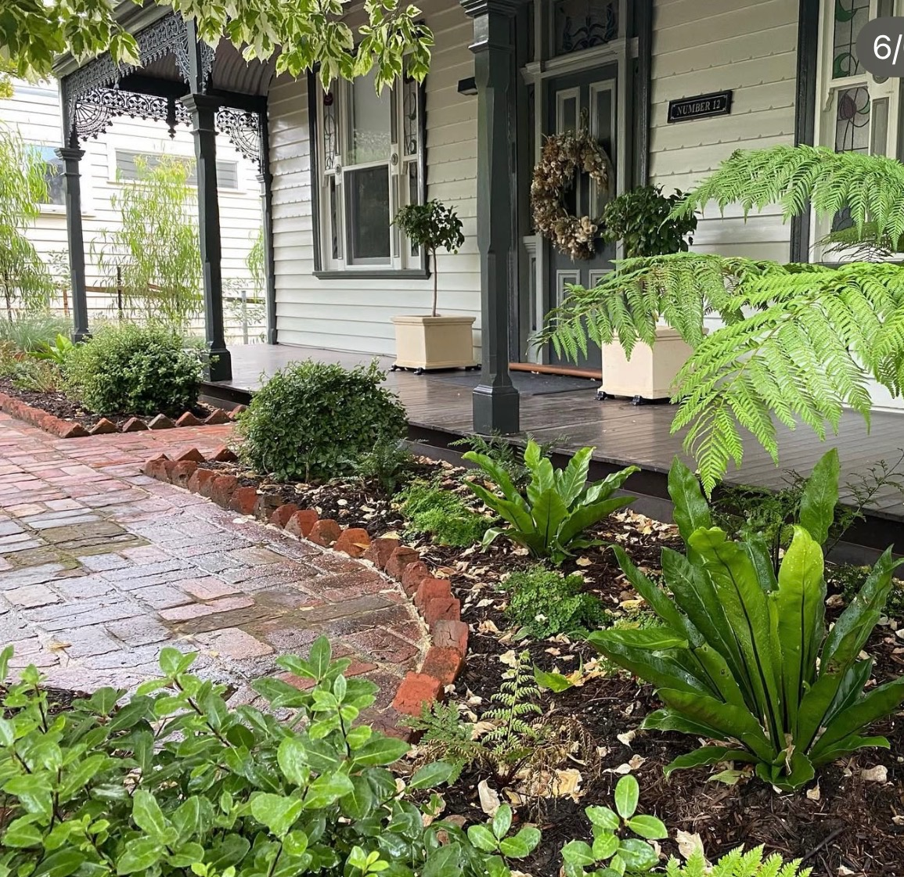
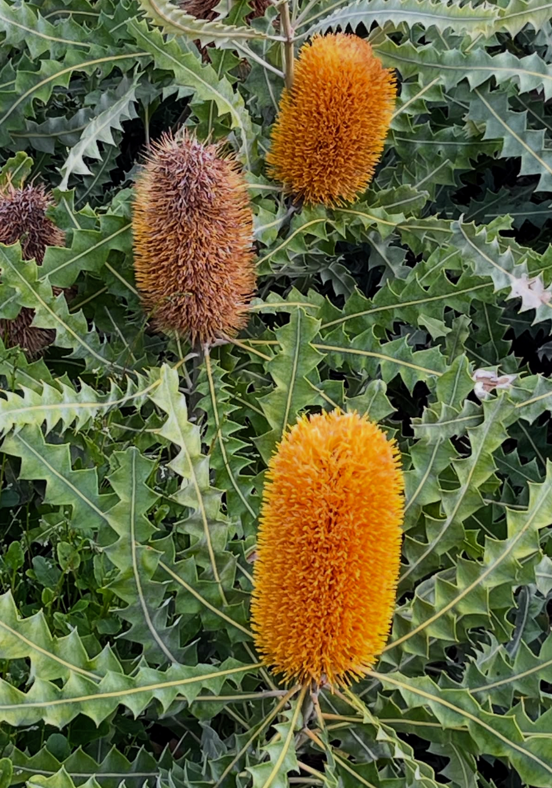
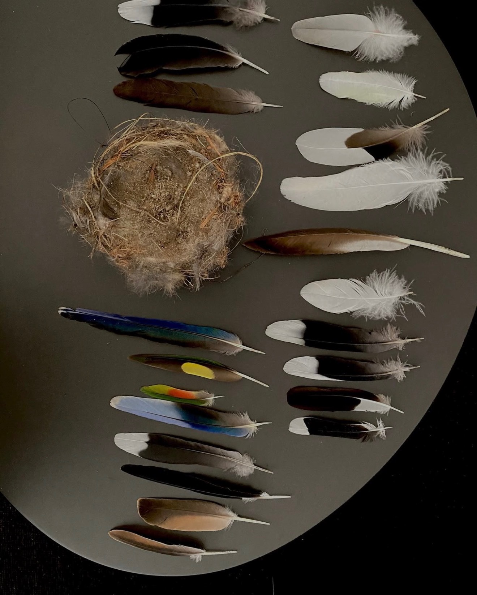
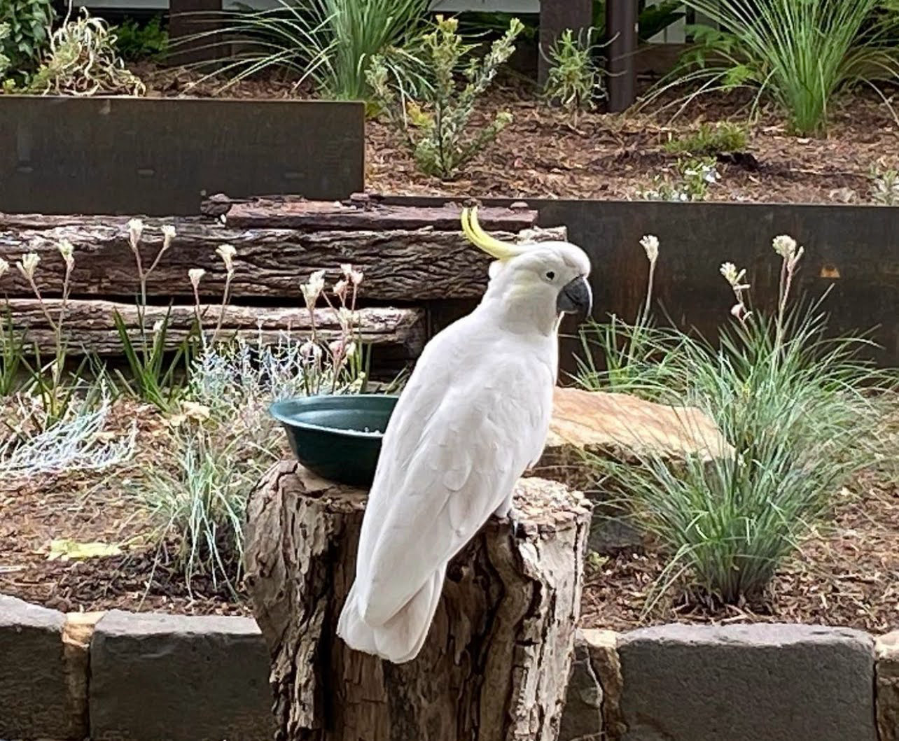
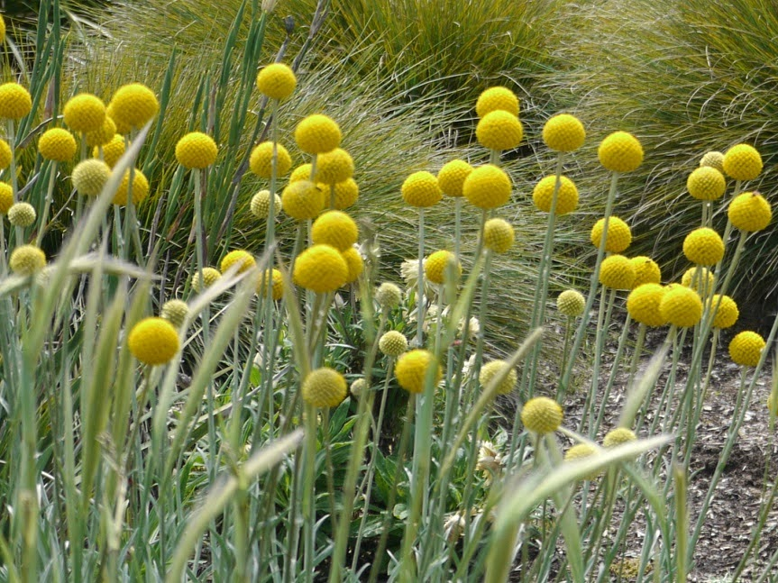
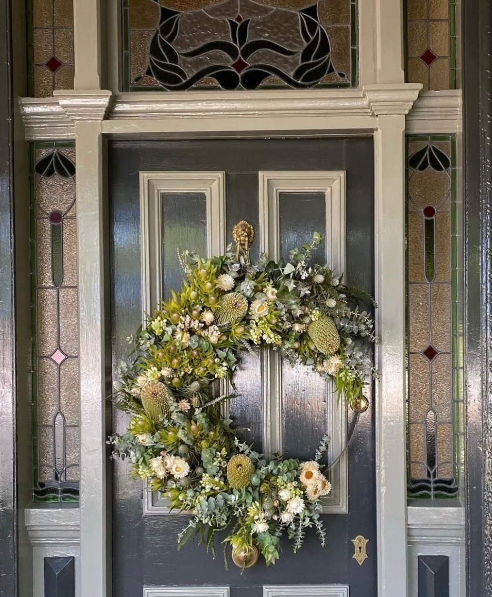
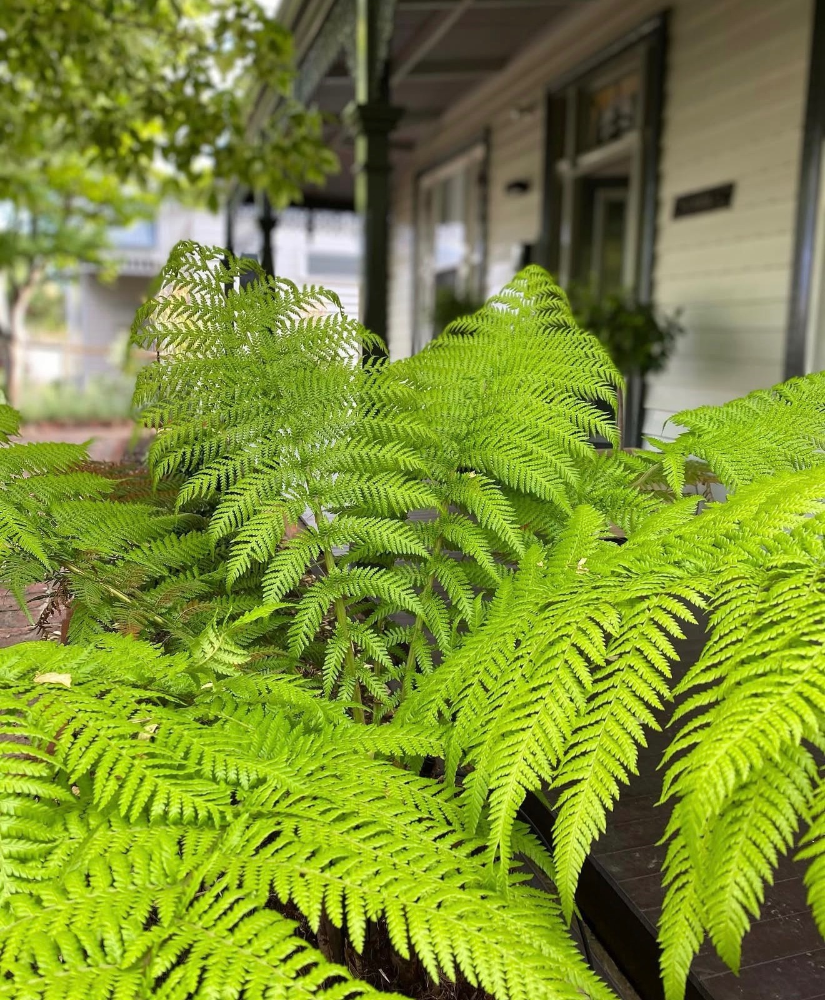
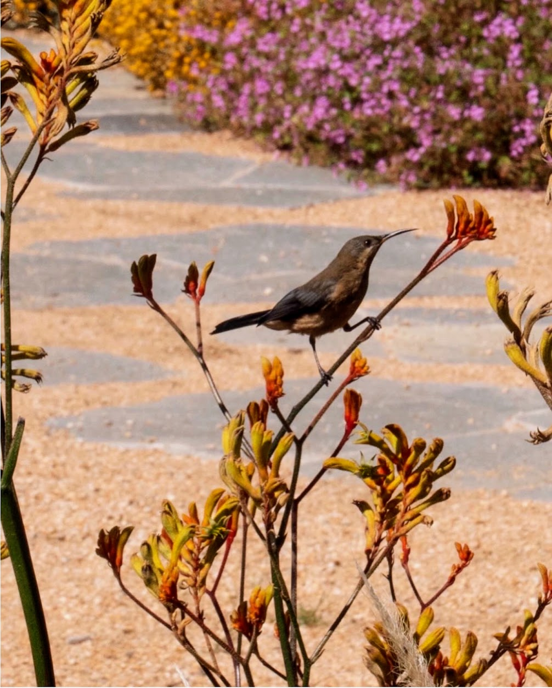

The place
Set amongst the dramatic landscapes of Australia, it's a reminder that the most meaningful experiences begin with thoughtful architecture, a deep connection to nature, and a feeling of being completely present. Melbourne Victorian Cottage is an old Victorian cottage set against an expansive backdrop that accentuates the hills in the distance. The front garden is simple and open, capturing the spirit of the house and offering a visual corridor straight through the home to the back garden and the vista beyond.
The brief
The studio was commissioned to develop an all native Australian garden — a place of peace and reflection — a garden grounded in care, memory, and interconnection. The brief required a sustainable environment that adjusts the landscape's balance, honoring old childhood haunts: the clients' memory of wildlife, old growth trees, and a small pond. Because they are away for most of the year living in Utah, their time spent here focused on adding new native elements and caring for the planting — they also needed guidance on finding a team of hired gardeners to care for the garden while away. The ultimate goal was the alchemy of a perfect song — a multi-layered garden that lifts wellbeing and provides a home for Melbourne's native birds, including the Fairy-wren, Willie Wagtail, Galah, and Australian Wood Duck, alongside specialized bushland species like honeyeaters, Rainbow Lorikeet, and Sulphur-crested Cockatoo.
The design
Naturalistic gardens borrow from the rhythm, layering, and diversity found in the Australian landscape. Every plant has a purpose — canopy trees and shrubs are used together to create balance, texture, and movement, transitioning from less maintenance to more nature. Dense planting shades the soil, reduces weeds, and creates resilient landscapes that improve over time.
Nature can be experienced throughout the garden's meandering paths, quiet seating, and layered planting — all invite you to slow down and reconnect to the outdoors. Wildlife was a key element in the design: through layered plantings that support birds, bees, and biodiversity, it is a garden that feels alive, through a deep connection to nature and a feeling of being completely present.